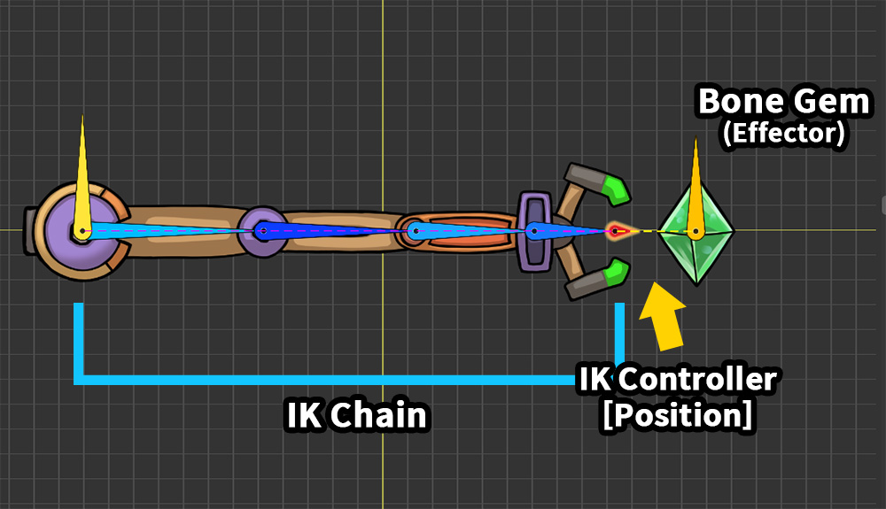
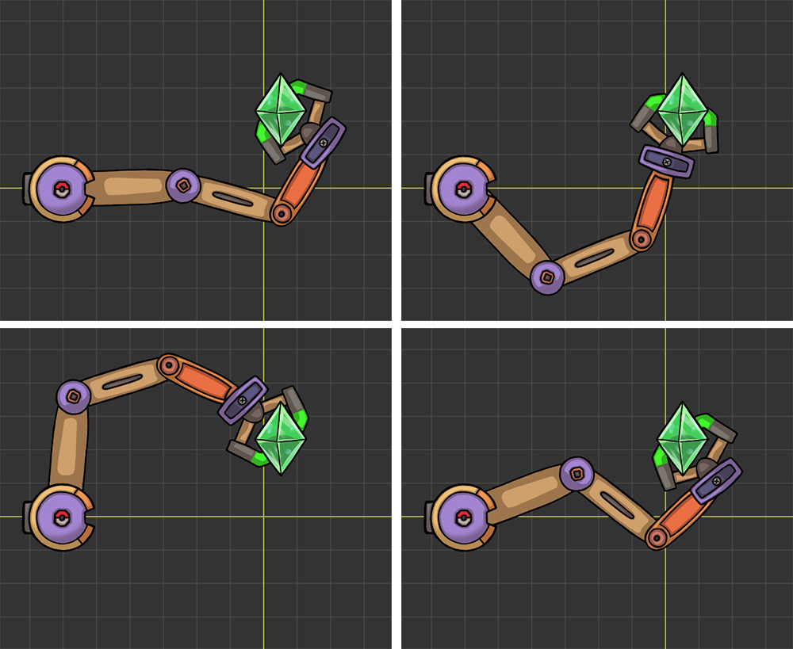
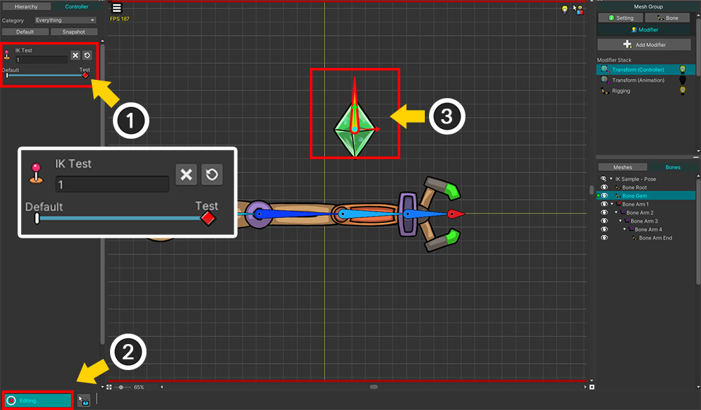

AnyPortrait > マニュアル > 意図したとおり、IKが動作するように誘導
意図したとおり、IKが動作するように誘導
1.5.0
IKでは、自動的に動くボーンを制御するのが難しいという欠点があります。
このページでは、ワーカーの意図に従ってIKが動作するように誘導するいくつかの方法を紹介します。
「IKチェーン」が「IKコントローラ」などによって動くとき、キャラクターが作業者の意図に合わない姿勢をとる場合があります。

ロボットアームが宝石をつかむことを表現した例です。
1つの「End」ボーンを含む5つのボーンで構成される「IKチェーン」があり、宝石（「Bone Gem」）を対象に「Position」タイプの「IKコントローラ」が設定されています。

(1) 「Transform」モディファイアを使って宝石（「Bone Gem」）を動かします。
(2) 「IKコントローラ」によってロボットアームが動いて宝石をつかむのが見られます。
IKの結果は私たちが期待したものとは異なります。
IK操作は成功ですが、その結果は気に入らません。

IK技術はその性質上唯一の正解を持っていません。
アルゴリズムや制約、属性によってIKの結果が変わります。
同じ位置の「Effector Bone」について、ロボットアームがさまざまな姿勢を取ることができることがわかります。
IK操作の過程でユーザーの意図が反映されるため、これを使用してボーンが意図した形で姿勢をとるようにすることができます。
以下の方法を確認し、適切に活用してください。
制御パラメータを使用したテスト
ボーンのプロパティを変更して「IKコントローラ」の結果を確認するには、「Effector Bone」を動かす必要があります。
そのたびにアニメーション編集画面に戻るのは面倒な作業です。
このとき、「制御パラメータ」と「Transform（Controller）」のモディファイアを使用すると、テストを簡単に試すことができます。

(1) テスト用の「制御パラメータ」を生成します。
(2) ここでは名前を「IK Test」とし、「Float」タイプに設定しました。
(3) 制御パラメータの範囲を「0～1」に設定しました。値が「1」のとき、「Effector Bone」を動かしてみます。
(1) メッシュグループを選択して「Modifier」タブを選択し、「Add Modifier」ボタンを押します。
(2) 「Transform（Controller）」モディファイアを選択して追加します。

(1) 「Transform（Controller）」モディファイアが選択された状態で、制御パラメータの値が「0、1」の状態にそれぞれモディファイアキーを追加し、制御パラメータの値を「1」に変更します。
(2) 「編集モード」をオンにします。
(3) 「IKコントローラ」の対象となる宝石（「Bone Gem」）を動かします。
(1) この状態で「Bone」タブに切り替えます。
(2) 「ボーン編集モード」がオフの状態で制御パラメータを調整します。
(3) 「Effector Bone」の宝石が動くと、「IKコントローラ」がどのように動作するかを確認できます。
このようにテストすると、IKの動作をすぐに確認しながらボーンを修正できます。
テストが完了したら、テスト用に生成した制御パラメータを削除してください。
回転角度を制限

最初の方法は、ボーンの回転角度を制限することです。
人の腕や脚のように、特定の方向にのみ関節を回転させるには、この方法が不可欠です。
(1) 「Bone」タブを選択します。
(2) 属性を変更したい「IKチェーン」内のボーンを選択します。
(3) 「IK Angle Constraint」項目の「Constraint」ボタンを押して、その属性を有効にします。

(1) 回転角度を制限できるUIが表示されます。 「スライダー」または「Min、Max」項目を調整します。この時「Soft Limit」項目もあらかじめ確認しておきましょう。
(2) ワークスペースで選択したボーンの回転範囲を確認できます。
(3) ボーンの回転角度が制限され、IKの結果が異なることがわかります。
注意
「IKコントローラ」の結果を表示するには、「ボーン編集モード」が無効になっている必要があります。

「Range、Min、Max」項目の下にある「Soft Limit」プロパティは、回転制限をどのように適用するかを決定します。
「Soft Limit」をオンにすると、設定範囲を少し超えても動きがスムーズに見えます。
一方、「Soft Limit」を無効にすると、角度制限を厳しく適用することがわかります。
（このオプションは、IK方式が「FABRIK」の場合にのみ動作します。）
初期ポーズを設定

「初期ポーズ（Initial Pose）」の設定方法もIKを制御するのに有効です。
AnyPortraitのIK演算は上記の手順を経て行われます。
まず、「基本ポーズ」から「初期ポーズ」にボーンを移動します。
そして、「初期ポーズ」に基づいてIK演算を行います。
IKアルゴリズムはボーンを少しずつ動かしながら目標を達成するため、「初期ポーズ」によってその結果が大きく変わります。
ユーザーが「初期ポーズ」を設定することは、IKを制御する最も効果的な方法です。
以下は、「初期ポーズ」を設定するオプションの説明です。
初期ポーズオプション 1. Preferred Angle
初期ポーズを設定する最初のオプションは「Preferred Angle」です。
ボンが設定された角度で回転した状態を「初期ポーズ」とみなします。
このオプションはモディファイアやアニメーションに関係なく常に一定のポーズからIK演算が行われます。
(1) ボーンを選択します。
(2) 「IK Angle Constraint」を有効にします。
(3) 「Initial Pose」の値を「Preferred Angle」に設定します。
注意
「初期ポーズ」は、IK処理時の回転角度を制限する演算と共に使用される。
したがって、回転角度制限を有効にする必要があります。

(1) 「Preferred」スライダーを調整します。
(2) ワークスペースの「緑色の線」から「Preferred Angle」を見ることができます。
(3) 「Preferred Angle」の値によってロボットアームのポーズが変わります。
「Preferred Angle」によって、IKの結果がどのように変わるかがわかります。
初期ポーズオプション 2. Keep Current
「Preferred Angle」方式は直感的で便利ですが、常に固定されたポーズを基準にするという欠点があります。
アニメーションによって関節の特性が変わった場合は、「初期ポーズ」を変更できるはずです。
「Keep Current（FK）」方式は、IKが演算される直前の「基本ポーズ」を「初期ポーズ」と見なします。
つまり、モディファイアやアニメーションから直接「初期ポーズ」を設定できます。
（FKを使用するオプションは「FABRIK」方式でのみ許可されています。）
メモ
「FK」は「Forward Kinematics」であり、「IK（Inverse Kinematics）」の逆です。
キーフレームアニメーションでボーンを一つずつ回転させながらアニメーションを作る技術を意味し、AnyPortraitの基本的な作業方法はすべて「FK」です。
(1) ボーンを選択します。
(2) 今回は「Initial Pose」の値を「Keep Current（FK）」に設定します。

「Keep Current（FK）」方式を活用するには、「IKチェーン」のボーンをモディファイアやアニメーションを使って直接動かさなければなりません。
(1) アニメーションを追加または選択します。
(2) 「Transform（Animation）」タイムラインを追加または選択します。
(3) 「IKチェーン」内のボーンを選択します。
(3) 対応するボーンをタイムラインに登録します。

(1) アニメーションの「編集モード」をオンにします。
(2) ボーンを選択した状態でキーフレームを追加します。
(3) ボーンを回転させて「初期ポーズ」を作ります。
(1) アニメーション「編集モード」を解除します。
(2) キーフレームを通じて設定された「初期ポーズ」に合わせて「IKコントローラ」の結果が上記のように変わったことがわかります。

(1) アニメーション編集モードでIK結果をプレビューするには、「表示メニュー」の「Preview Calculated Bones」（ Alt + B ）を有効にします。
(2) ワークスペースに黄色のアウトラインで示されたIK結果を見ることができます。
初期ポーズオプション 3. Average
最後のオプションは、「Preferred Angle」と「Keep Current（FK）」の中間値を「初期ポーズ」として利用する「Average（Preferred+FK）」オプションです。
これは、「Preferred Angle」の設定とIKチェーンのボーンのアニメーションの両方をIKに反映するオプションです。
(1) ボーンを選択します。
(2) 「Initial Pose」の値を「Average（Preferred+FK）」に設定します。
アニメーション編集画面でボーンを回転させましょう。
上記のように、キーフレームアニメーションでは、ボーンが右上を向いています。 （FK）
一方、設定された「Preferred Angle」は右下を向いています。
「IKコントローラ」の結果は、2つの方向の平均に基づいて計算されます。
中間ボーンにIKコントローラを設定
この方法には、前述の方法とはまったく異なるアプローチがあります。
この方法は、「IKチェーン」に2つ以上に「IKコントローラ」を指定してポーズを調整することです。 （関連ページ）
(1) 新しいボーンである「Bone Helper」を「IKチェーン」の中間頃に追加します。
新しいボーンはIKチェーンとは別に置き、自由に動くようにします。
(1) IKチェーンの中央に位置するボーンを選択します。
(2) 追加した「Bone Helper」を対象に「Position」タイプの「IKコントローラ」を設定します。重みを「0」より大きい値に設定します。重みの値によって、全体の「IKコントローラ」への影響が調整されます。
(1) アニメーションを選択します。
(2) 「Bone Helper」を選択してタイムラインに登録します。
(3) キーフレームを追加します。
(4) 「Bone Helper」の位置を変更します。

「Bone Helper」によってロボットアームが異なって動くのがわかります。
FKを使ってIKを制御する際のヒント
「FK」を使用する「Initial Pose」のオプションを選択した場合、または中間の「Effector Bone」を追加する場合は、キーフレームを追加して「初期ポーズ」を作成する必要があります。
この場合、多くのキーフレームを作成する必要はありません。
(1) 「IKチェーン」に属するボーンは、最初のフレームにのみキーフレームが生成されています。
(2) 「Effector Bone」を含む他のオブジェクトは通常、アニメーション全体にキーフレームが作成されています。
(3) キーフレームによって宝石が動き続けます。

アニメーションを再生すると、動く宝石に合うようにロボットの腕が適切に動くことがわかります。
このように、IK演算のガイド用にキーフレームを作成する場合、最小限のキーフレームだけを作れば楽に作業できます。